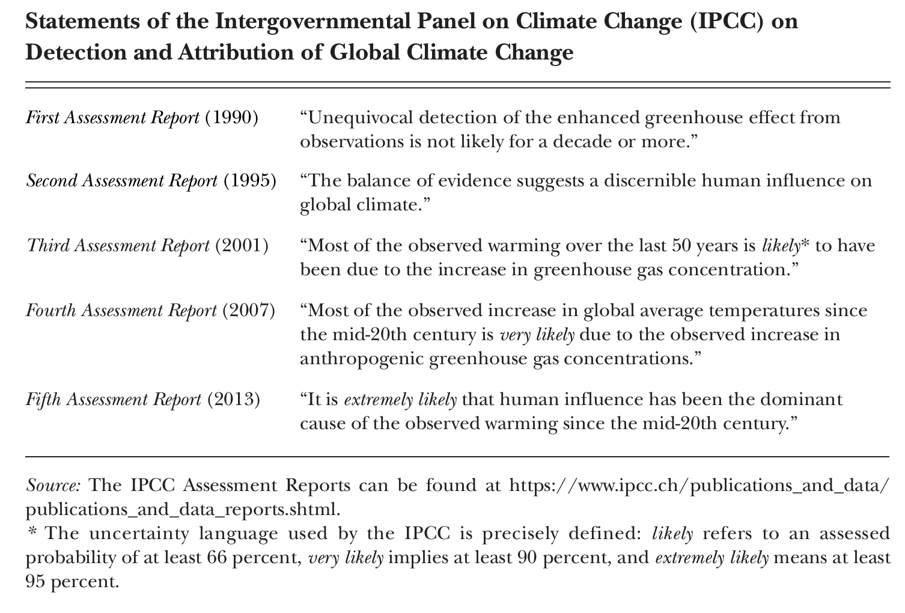

1.1 – what is climate change?
the carbon cycle
Really old plants and organic material decompose, creating fossil fuels (i.e., natural gas, oil, coal). When we burn fossil fuels, we release those carbon molecules as carbon dioxide (CO2) into the atmosphere. This disrupts the natural carbon cycle, which is the process by which carbon is exchanged between the atmosphere, oceans, and land.
the greenhouse effect
The greenhouse effect is the process by which the Earth’s atmosphere traps heat. The greenhouse effect is a natural process that keeps the Earth’s surface warm enough to support life. Without the greenhouse effect, the Earth’s surface would be about 30 degrees Celsius cooler.
As we release more greenhouse gases into the atmosphere, the greenhouse effect becomes stronger by increasing the amount of solar energy that gets trapped in the atmosphere. This leads to global warming, which is the increase in the Earth’s average surface temperature. The main greenhouse gases are carbon dioxide (\(CO_2\)), methane (\(CH_4\)), and nitrous oxide (\(N_2O\)).
the Intergovernmental Panel on Climate Change (IPCC)
The Intergovernmental Panel on Climate Change (IPCC) is the United Nations body for assessing the science related to climate change. The IPCC was established in 1988 by the World Meteorological Organization (WMO) and the United Nations Environment Programme (UNEP). The IPCC is responsible for providing policymakers with regular assessments of the scientific basis of climate change, its impacts and future risks, and options for adaptation and mitigation. The IPCC does not conduct its own research, but rather reviews and synthesizes existing research. The IPCC’s most recent assessment report, the Sixth Assessment Report (AR6), was released in August 2021.
attribution of warming to human activity
AR6 of the IPCC included the following statement about the role of human influence on climate change: “It is unequivocal that human influence has warmed the atmosphere, ocean and land. Widespread and rapid changes in the atmosphere, ocean, cryosphere and biosphere have occurred.” This statement is the strongest statement the IPCC has made to date about the role of human activity in climate change.

It is interesting to note how the IPCC’s statements on the attribution of climate change to human activity have evolved over time. Hsiang and Kopp (2018, Table 2) provide the table below that captures the evolving language used by the IPCC in its assessment reports, beginning with AR1 in 1990.

equilibrium climate sensitivity
Equilibrium climate sensitivity (or ECS) is the change in global mean surface temperature following a doubling of atmospheric CO2 concentration. It is a measure of the climate system’s response to a change in radiative forcing. ECS is useful for understanding how increases in CO2 in the atmosphere result in changes in surface temperature changes. In IPCC AR6, ECS is estimated to be in the likely range of 2.5–4.0 and very likely range of 2.0–5.0 degrees Celsius, with a best estimate of 3.0 degrees Celsius.

timing
One challenge with \(CO_2\) emissions is that there is a time lage between emissions and warming. Then, \(CO_2\) tends to stay in the atmosphere for a long time. If we doubled \(CO_2\) emissions today, we would not see the full warming effect for another 20-30 years. But, \(CO_2\) dissipates very slowly (around 0.25% to 0.50% per year), which means that around 70% of \(CO_2\) we emit today will still in the atmosphere in 100 years.
Methane (\(CH_4\)) operates differently. Methane has a much shorter lifetime in the atmosphere, but it is a much more potent greenhouse gas than \(CO_2\). This means that reducing methane emissions can have a more immediate impact on warming than reducing \(CO_2\) emissions.
climate vs. weather
Climate is the long-run joint distribution of weather. Think of a bell curve or normal distribution. Typically, summers in Atlanta are hot and humid. That’s climate. Weather is a draw from that distribution (e.g., it’s raining today). Climate change can be represented by a shift or “flattening” of the distribution of weather, or both.